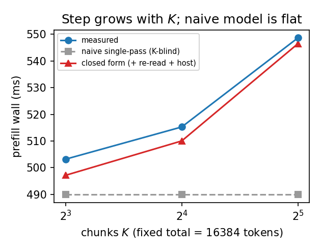
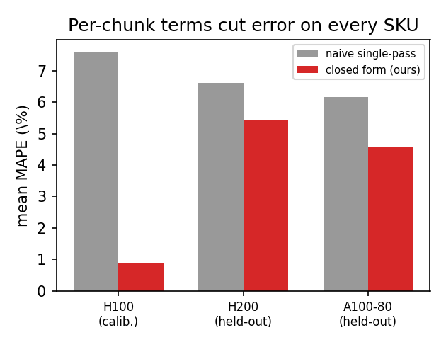
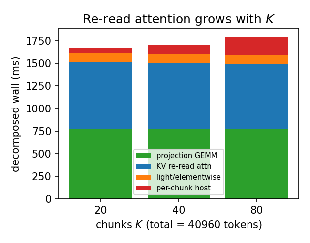
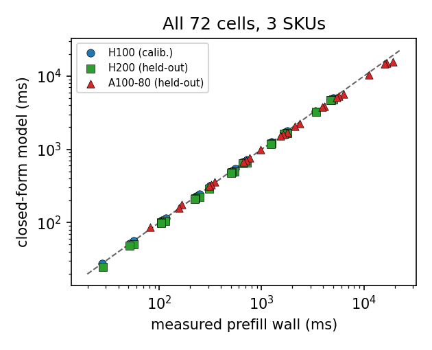

Serving engines split a long prompt into K chunks to bound per-step latency. Every roofline latency model we know charges prefill by total token count, so it is blind to K — it predicts the same cost whether a prompt runs in one chunk or thirty. On real hardware that is wrong: holding the prompt fixed and chunking finer makes the wall grow up to 20%. This page gives a closed-form account of where that cost comes from — a per-chunk KV re-read attention term plus an arch-specific per-chunk host term — and validates it across three datacenter GPUs, two of them never fit.
To keep one slow prompt from blocking everyone else, a serving engine chops a long prompt into chunks of at most cs tokens and prefills one chunk per step. The chunk size is the central serving knob: smaller chunks protect co-located decode but mean more steps. To plan a deployment you need to know what a chunked prefill costs — and the analytical models on offer all compute prefill from the total token count, so they return the same number no matter how finely you chunk. We measure that this is false, and write down a closed-form model that says exactly how much extra each chunk costs.
Fix the prompt at 16,384 tokens on an H100 and sweep the chunk count from K=8 to K=32: the measured prefill wall rises from 503 ms to 549 ms. Across the full grid the fixed-total growth reaches 20%. A predictor that is a function of total tokens alone returns a flat line and cannot see any of this.
The first is KV re-read attention: chunk i re-reads the cumulative cache of i·cs tokens, so total attention work is cs²·K(K+1)/2 and grows with K at fixed length. The second is a per-chunk host term: the CPU scheduler pays a fixed cost once per chunk that does not divide by GPU FLOPs. Both are written down in closed form from the chunk geometry and microbenchmark constants.
One chunked-attention efficiency is fit on H100 only; the per-chunk host slope is taken from an independent chunk-size sweep, not the target cells. The model then predicts all 72 cells to 3.6% mean MAPE versus 6.8% (and 50.5% max) for the K-blind baseline. The two never-fit SKUs (H200, A100-80) land at 5.0% mean — both mechanisms transfer across architectures.
The per-chunk host slope is ~6.8× larger on Ampere (9.34 ms/chunk) than on Hopper (H200, 1.38 ms/chunk). So halving the chunk size doubles the host bill, and that bill is far heavier on an Ampere host. The closed form makes this arch-dependent cost of chunking finely explicit before you deploy.
No background is assumed. Three ideas carry the rest of the page: what prefill is, what chunked prefill changes, and why a model that knows only the total prompt length is blind to the one knob operators actually turn.
Before a model emits its first token it must run a forward pass over the entire prompt to build the key/value cache that later decode steps read from. This is prefill, and for a long prompt it is the dominant cost of time-to-first-token. Done in one pass, attention reads each token against every earlier token exactly once — the familiar lower-triangular cost.
A single huge prefill step monopolizes the GPU and stalls every decode request co-located on the same engine. Sarathi-style chunked prefill fixes this by capping the per-step token budget at cs tokens and feeding the prompt one chunk at a time, so a prompt of S tokens takes K = ⌈S/cs⌉ prefill steps. The chunk size cs is the dominant serving knob: smaller cs protects co-located decode latency, but it means more steps — and each step re-invokes the attention kernel and re-runs the CPU scheduler.
Two costs that a single pass pays once are now paid K times: attention re-reads a growing cache at every chunk boundary, and the scheduler runs once per chunk. Both grow with K even when the total prompt is held fixed — and that is exactly what a K-blind model cannot represent.
The natural mechanism model for a prefill of S tokens — taken verbatim from analytical device frameworks — sums projection GEMMs, one causal attention pass over S tokens, elementwise traffic, and a single per-step host floor. Every term is a function of the total token count S alone, so the baseline returns the same value for any chunking of the same prompt.
Analytical simulators and roofline characterizations model the compute and memory of the whole prefill but neither re-charge attention per chunk nor expose a per-chunk host term. Learned predictors can fit chunked configurations in-distribution, but as black boxes they neither name the re-read mechanism nor extrapolate to unseen chunk sizes from microbenchmark constants. The next section writes down the two terms the K-blind baseline omits.

Fixed total prompt (16,384 tokens, H100). The measured prefill wall grows with the chunk count K, while the naive single-pass predictor is flat (K-blind). The closed-form model tracks the growth via the per-chunk KV re-read attention and host terms.
A request of S total tokens (prefix cache disabled, so the whole prompt is prefilled) is processed in K = S/cs chunks. The model composes four independently determined pieces; only the KV re-read attention term and the per-chunk host term are non-trivial, and they are the contribution.
Chunk i has cs query tokens that attend causally to the cumulative key/value cache of i·cs tokens written by chunks 1..i. Summed over chunks, attention work is Σ cs·(i·cs) = ½·cs²·K(K+1), which grows with K at fixed total length cs·K. A single attention pass over the whole prompt charges only the lower triangle once; the chunked kernel re-reads the running cache at every boundary.
The decisive property is the K(K+1) factor. Substituting cs = S/K gives a cost proportional to S²(1+1/K): the single-pass ½S² lower-triangle cost plus a chunk-boundary surcharge that a one-pass model omits entirely. Only one constant in this term is fit — the chunked-attention efficiency η̄ₐ = 0.63, calibrated on H100 cells alone — and it is held fixed for the other SKUs.
The scheduler runs one iteration per chunk: dequeue the request, manage paged KV blocks, build per-layer kernel arguments, and issue launches. In eager execution this host work sits on the critical path and is paid once per chunk, so total host cost is K·h. The defining property is that h does not divide by GPU FLOPs — it is an arch-specific CPU/launch cost.
All measurements are fresh runs on the PACE Phoenix cluster (H100-80GB, H200, A100-80GB nodes, vLLM 0.19.1.dev, PyTorch 2.10+cu126, eager execution), serving Llama-3.1-8B-Instruct with chunked prefill enabled and prefix caching disabled, one request at a time. Each job captures a reproducibility record (git SHA, conda environment, GPU UUID/driver) at submit time.
The closed-form model predicts all 72 cells to 3.6% mean, 10.0% p95, and 17.6% max MAPE, versus 6.8% mean (50.5% max) for the K-blind baseline. On the calibration SKU (H100) it reaches 0.9% mean (2.9% max). The two held-out SKUs — H200 and A100-80, never fit, host slope from an independent sweep — land at 5.0% mean, confirming both terms transfer across architectures.
| SKU | role | naive mean | naive max | model mean | model p95 | model max |
|---|---|---|---|---|---|---|
| H100 | calib. | 7.6% | 50.5% | 0.9% | 1.8% | 2.9% |
| H200 | held-out | 6.6% | 37.3% | 5.4% | 10.4% | 11.3% |
| A100-80 | held-out | 6.2% | 13.5% | 4.6% | 11.0% | 17.6% |
| all | — | 6.8% | 50.5% | 3.6% | 10.0% | 17.6% |
Per-SKU chunked-prefill MAPE (24 cells each). Naive is the K-blind single-pass predictor; Model adds the closed-form per-chunk KV-re-read attention and per-chunk host term. η̄ₐ is fit on H100 only; the H200 and A100-80 host slopes come from an independent sweep, so both are fully held out.

Mean MAPE before (naive single-pass, grey) and after (closed form, red) on each SKU. H100 is the calibration SKU; H200 and A100-80 are held out (host slope from an independent sweep, η̄ₐ from H100).
The independently-derived per-chunk host slopes confirm the arch dependence: the Ampere host path is about 6.8× that of Hopper. This is the cost that does not divide by GPU FLOPs, so it is the same few-millisecond bill on a fast SKU as on a slow one — but it forms a far larger fraction of the step on the Ampere host.
Per-chunk host slope h (ms/chunk) from the independent chunk-size sweep. A100-80 reuses the A100 (Ampere) host path measured on A100-40; the H100 slope is the one fitted host constant (no independent H100 sweep was available).
Decomposing the model shows the projection-GEMM and light/elementwise terms are flat in K at fixed S, while the re-read attention term rises with K exactly as the closed form predicts. Across the grid the re-read attention term is on average 27.1% of the step and the per-chunk host term 8.3%; the host term's share rises sharply in the short-chunk, low-context regime (small S, large K), where it is the difference between the flat naive prediction and the measured wall.

Closed-form decomposition (H100, total 40,960 tokens) as the chunk count K rises. Projection GEMM and light traffic are K-invariant; the KV-re-read attention term grows with K, which is what makes a finely chunked prefill more expensive than a coarse one at the same total length.

All 72 cells, three SKUs (log–log). Held-out SKUs (H200, A100-80) are open markers; the closed-form model tracks four orders of magnitude of prefill wall, from tens of milliseconds to tens of seconds.
The value of the result divides by audience. For operators it is a planning calculator for the one knob they actually turn; for model builders it is a white-box account of a cost prior latency models structurally omit.
Given a SKU, prompt length, and candidate chunk size, the model returns the prefill wall in closed form — and therefore the latency cost of chunking more finely to protect co-located decode. Because the re-read term scales as cs²·K(K+1) and the host term as K·h, halving the chunk size does not double cost on a compute-rich SKU but is expensive on an Ampere host where h is ~6.8× larger. The model makes that arch-dependent trade-off explicit before deployment.
Two structural terms — KV re-read attention and a per-chunk host floor — are enough to turn a K-blind 6.8%-mean / 50.5%-max baseline into a 3.6%-mean predictor, with only one fitted efficiency constant on a single SKU. The white-box form names the mechanism (it is not a learned operator table), and both held-out SKUs validate the transfer at 5.0% mean. A latency model that charges prefill by total tokens alone has a measured, structural gap here.
This page is part of a portfolio on the host term in LLM serving — the CPU/launch cost that does not divide by GPU FLOPs and shows up differently across chunked prefill, CUDA-graph capture, tensor parallelism, and FP8. Back to the host-term portfolio →
The claims are deliberately bounded. Each item names a specific way the result could be over-read and the precise scope that remains valid.
The conclusions hold for Llama-3.1-8B-Instruct in BF16 on the single-GPU PACE SKUs H100, H200, and A100-80, in eager mode with prefix caching disabled, one request at a time. The central findings — that chunked-prefill wall grows with K at fixed total length, and that the growth is the closed-form sum of a cs²·K(K+1) KV-re-read attention term and an arch-specific K·h host term — are the parts expected to generalize.